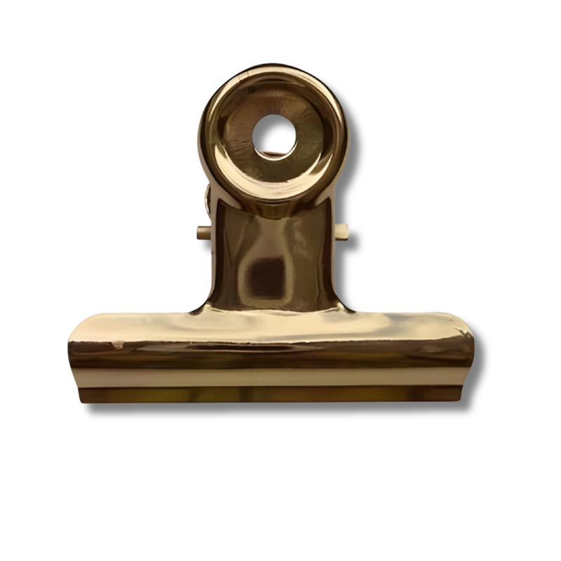
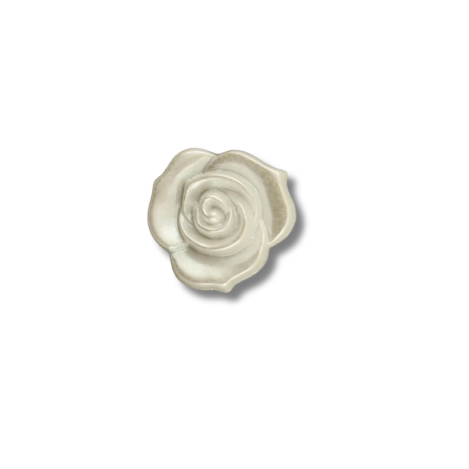

Gabrielly,
Faz pouco tempo que a gente se conhece, mas você já se tornou importante pra mim. Você é linda, tem um jeito que me faz bem e uma sensibilidade que eu admiro. Gosto muito de conversar com você.
Espero que você consiga se tratar com mais carinho e se dar tempo pra seguir no teu ritmo. O que fizeram com você não foi culpa sua. Tem muita coisa boa em você, e nada do que aconteceu tira isso.
Torço pra que você realize teus planos e construa um futuro que te faça feliz. Espero também que encontre alguém que te trate com carinho e respeito. Que bom que a gente se conheceu.
